AI Academy · Level 2 · Grade 7 · Week 13 · Student lesson
Types of Classification Error
Learn to understand, design, build, test and explain AI systems responsibly.
Project: Transparent Book Recommender
Before you start
Week 12: accuracy counts correct predictions over all scored cases.
Plan time to read, investigate and explain. Keep predictions separate from observations.
Student lesson · 1 of 16
Your mission
Your learning target
I can build a labelled confusion matrix from matched reference and prediction pairs.
I can distinguish false positives from false negatives using a declared positive class.
I can check matrix totals and explain why equal accuracy can hide different errors.
Remember before reading
Close your notes first. A rough first answer helps us choose the right starting point; it is not a score for your ability.
Without opening the old lesson, explain one key idea from Accuracy as a Fraction. Give an example and a mistake that the idea helps you avoid.
Without opening the old lesson, explain one key idea from Human Classifier Simulation. Give an example and a mistake that the idea helps you avoid.
Without opening the old lesson, explain one key idea from Rows Columns and Data Types. Give an example and a mistake that the idea helps you avoid.
After trying, check the relevant lesson or ask your teacher. Change the part of your explanation that the evidence shows was wrong.
Week 13: Types of Classification Error
False alarms and misses can have different costs.
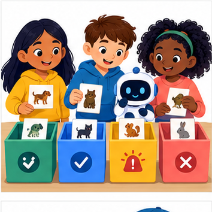
THINKER MISSION
Sort 12 predictions into four outcome boxes.
Thinker name and date:
Readiness for the connected explanation
Why should a reproducible run save predictions linked to example IDs rather than only an accuracy score?
This week’s end goal
By the end, I can construct a confusion matrix with declared axes and name both error types.
Student lesson · 2 of 16
Notice the evidence
PICTURE STORY
Notice → Predict → Explain
Begin with visible evidence. Do not explain more than the picture and information support.
MYSTERY
The learners must use types of classification error to solve a problem. What information do they have? What decision or calculation do they make? What would count as evidence that it worked?
Three observations (what you can point to):
My prediction and the clue supporting it:
A closer explanation
A confusion matrix shows which labels a classifier mixes up. It counts examples after predictions are made; it does not fit or repair the classifier. Week 12 had reference/prediction pairs clear/clear, blocked/blocked, clear/blocked. A labelled table can preserve the type of that error as well as the total score.
This week uses eight new fictional evaluation records from a frozen classifier. They are not extra predictions from the Week 12 code. Each ID appears once with a reviewed reference and one prediction. The grouped table below lists every ID. Keep reference and prediction paired by ID before counting.
| Evaluation IDs | Reference | Prediction |
|---|---|---|
| V1 V2 | clear | clear |
| V3 | clear | blocked |
| V4 V5 | blocked | clear |
| V6 V7 V8 | blocked | blocked |
Use reference labels for rows and predicted labels for columns. On both axes the order is clear, then blocked. Declare blocked as the positive class and clear as negative. Positive means the condition of interest, not good or safe. A missed blocked case and a false alarm are different errors.
Student lesson · 3 of 16
See how it works
VISUAL MECHANISM
Input → Process → Output
Trace the information. At each stage, ask what changed and how you could test it.
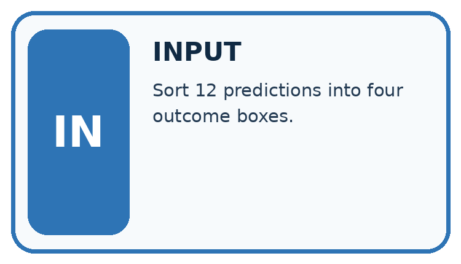
↓
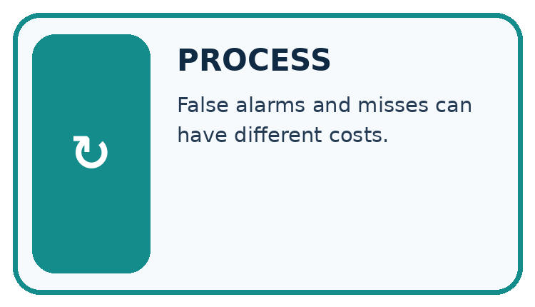
↓
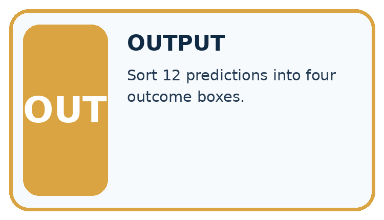
Which stage could fail even when the other two are correct? Explain:
A closer explanation
pairs = [("V1", "clear", "clear"),
("V2", "clear", "clear"),
("V3", "clear", "blocked"),
("V4", "blocked", "clear"),
("V5", "blocked", "clear"),
("V6", "blocked", "blocked"),
("V7", "blocked", "blocked"),
("V8", "blocked", "blocked")]
labels = ["clear", "blocked"]
index = {label: i for i, label in enumerate(labels)}
counts = [[0, 0], [0, 0]]
for item_id, reference, prediction in pairs:
counts[index[reference]][index[prediction]] += 1
print(counts)
correct = counts[0][0] + counts[1][1]
print(correct, len(pairs))index maps clear to 0 and blocked to 1. Each paired record adds one to its reference row and prediction column. The script prints [[2, 1], [2, 3]] then 5 8. It assumes unique IDs and only these two labels. Check IDs and missing or unresolved references before counting; the code does not validate all those conditions.
| Reference rows | Predicted clear | Predicted blocked |
|---|---|---|
| Reference clear | 2 | 1 |
| Reference blocked | 2 | 3 |
The diagonal cells count correct predictions: 2+3=5. Off-diagonal cells count mistakes: 1+2=3. Every record must contribute exactly once. This is a count matrix, not percentages or probabilities. Keep the axis labels even when copying the numbers.
Connect the picture and the explanation
Point to the input, the deciding step and the result in this week’s visual. Explain the same step in ordinary words. A picture helps when you can say what each part represents.
Student lesson · 4 of 16
Compare the cases
CASE GALLERY
Four Tests, Four Kinds of Evidence
A system is not understood until it survives more than one comfortable example.


NORMAL CASE: predict and name evidence. BOUNDARY CASE: predict and name evidence.


MISSING INFORMATION: predict and name evidence. TRANSFER CASE: predict and name evidence.
Which case is most likely to reveal a hidden assumption? Why?
Change one thing in the pictured case
Change: Change one repair/sound prediction to repair/repair after a real model revision.
Prediction: Repair row becomes [0,3]; agreement becomes 5/6.
Reason: One false negative moves to true positive; the sound row stays [2,1].
Student lesson · 5 of 16
Words that unlock the idea
VOCABULARY LAB
Words You Can Use to Reason
A definition matters when you can recognize the idea, use it, and contrast it with a near-miss.
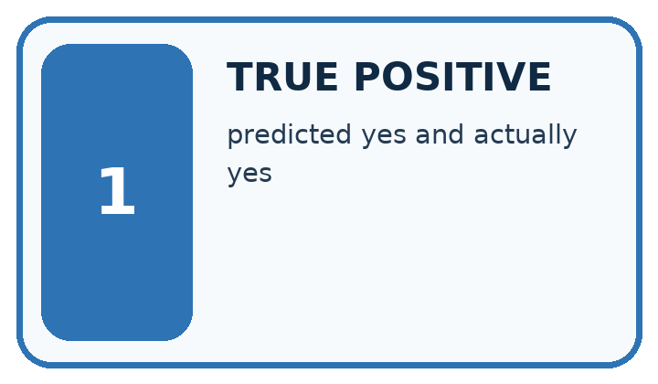
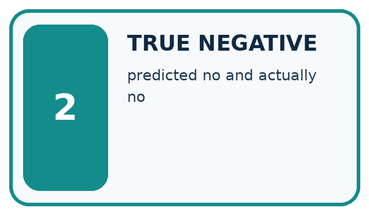
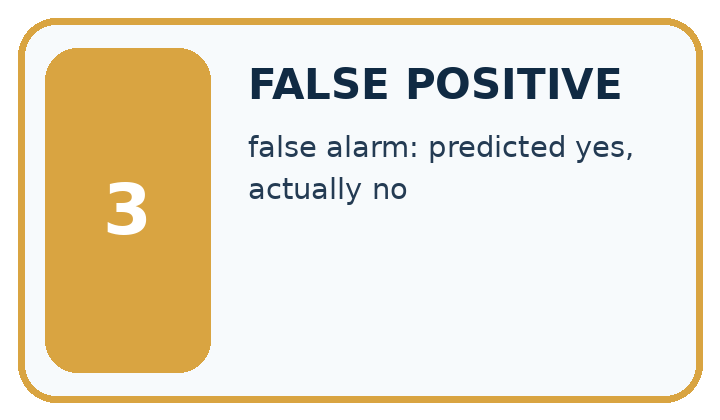
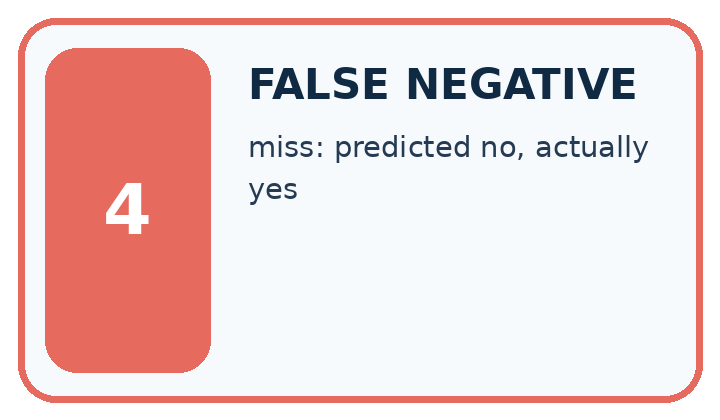
| Word | My own example | Not this / boundary |
|---|---|---|
| true positive | An actually positive case correctly predicted positive. | |
| true negative | An actually negative case correctly predicted negative. | |
| false positive | An actually negative case predicted positive, under a stated definition of positive. | |
| false negative | An actually positive case predicted negative, under a stated definition of positive. |
Words used in the closer explanation
| Word | Meaning |
|---|---|
| Confusion matrix | A table counting reference and prediction combinations |
| Positive class | The class chosen as the condition of interest |
Student lesson · 6 of 16
Follow a worked example
WORKED EVIDENCE
Reason Step by Step
Predict first. Then check each step. A correct answer without visible reasoning is incomplete evidence.
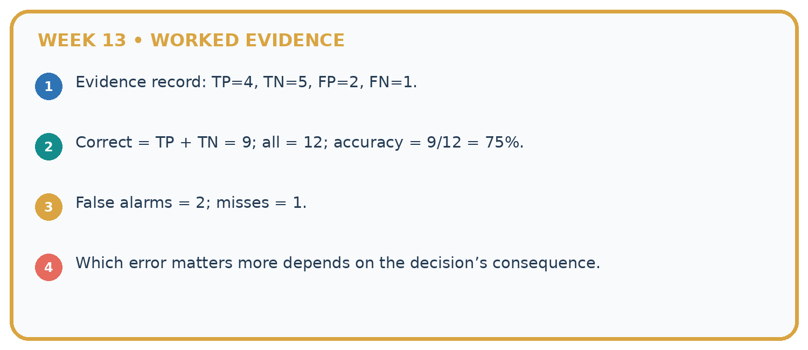
1. Evidence record: TP=4, TN=5, FP=2, FN=1.
2. Correct = TP + TN = 9; all = 12; accuracy = 9/12 = 75%.
3. False alarms = 2; misses = 1.
4. Which error matters more depends on the decision’s consequence.
Recalculate, retrace, or restate the reasoning in your own representation:
CHECK Did the evidence answer the exact question? Did the total, path, or source record stay consistent?
A closer explanation
Blocked is the positive class
True means prediction agrees with the reference. It does not prove that the reference annotation is infallible. Resolve disputed labels with the documented review policy rather than silently changing them to match predictions.
Learn from the worked case
Cover the result before checking it. Say what is given, choose the procedure, and follow one step at a time. Then uncover the result and explain your first mismatch. Ask why a step is allowed, not only what number it produces.
A pictorial worked case: Types of Classification Error
A fictional book-condition checker predicts repair or sound.
The facts we will use
Use reference rows and prediction columns in order sound,repair. Repair is positive.
Six reference/prediction pairs: sound/sound twice; sound/repair once; repair/sound once; repair/repair twice.

![Types of Classification Error. Declare axes: Rows: reference sound,repair. Columns: predicted sound,repair.. Fill sound row: Two true negatives and one false positive: [2,1].. Fill repair row: One false negative and two true positives: [1,2].. Read result: Matrix [[2,1],[1,2]]: agreement 4/6, repair recall 2/3.](../assets/academy-visual-ai-2-13.png)
Read the picture one step at a time
Why this result follows
Each case enters one cell according to its reference and predicted label. The off-diagonal cells represent different mistakes: a false alarm on a sound book versus a missed repair. Trace the cell definitions before naming rates; swapping axes changes the table’s interpretation even if its diagonal sum remains unchanged.
What this example does not establish
Reference labels can themselves be disputed; a true-positive name does not guarantee the annotation is infallible.
Read the labelled picture: Which error causes a sound book to be sent for unnecessary repair review?
Change one thing: Change one repair/sound prediction to repair/repair after a real model revision. Predict the result before checking the explanation. What remains the same?
Student lesson · 7 of 16
Find and repair a mistake
ERROR DETECTIVE
Compare → Diagnose → Repair
Do not patch the answer. Find the earliest unsupported assumption, wrong step, or weak evidence.
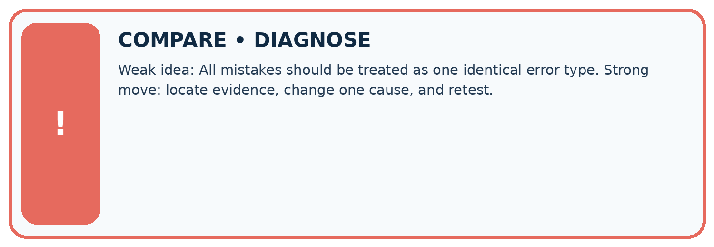
| Evidence record | Expected | Actual | Likely cause / next test |
|---|---|---|---|
| normal case | works | ||
| boundary case | stated rule | ||
| missing input | safe response | ||
| fresh transfer | generalizes |
Repair one cause. Why is this repair better than changing several things?
A closer explanation
Always report the evaluated split, number of records, reference and prediction axes, label order and positive class. Reversing the axis order changes positions, not the underlying outcomes. Transposing rows and columns swaps the two kinds of error unless the labels are corrected. Read the headers before interpreting a diagram from another source.
A zero cell means no such event in this evaluated set, not that it is impossible. A confusion matrix does not show the cause of errors, label quality or performance on future data. Keep the ID-level records for investigation. Next week examines accuracy when class counts are unequal.
Student lesson · 8 of 16
Practise together
LOGIC STUDIO
Trace Before You Run
Block code, pseudocode, tables, and diagrams are different ways to expose the same reasoning.

SET evidence_record PREDICT expected_result RUN one normal case and one boundary case COMPARE actual_result with expected_result IF different: locate first cause; change one factor; RETEST EXPLAIN result, limitation, and next safe step
Trace one input. Which line changes the state or chooses a path?
A closer explanation
Row totals are 3 reference-clear and 5 reference-blocked. Column totals are 4 predicted-clear and 4 predicted-blocked. All four cells sum to 8. Accuracy is the diagonal total divided by the total: 5/8, or 62.5 percent. The Week 12 three-record matrix was [[1,1],[0,1]] in this same axis order, giving 2/3.
Another classifier on these same eight reference-labelled records could have matrix [[3,0],[3,2]]. It also gets 5/8 correct, but has zero false positives and three false negatives. Our worked classifier has one false positive and two false negatives. Equal accuracy does not settle which error pattern is preferable; consider the task and evidence before choosing.
Practise with less help: Explain the two error types
Use workbook W2 for the connected example “Confusion matrices”. First fill the input and rule boxes. Try the middle steps before asking for a hint. After a hint, try the next step yourself.
| Plan | Do | Check |
|---|---|---|
| What is given? Which rule or procedure applies? | Record each intermediate step. | Does the result follow? What remains unknown? |
Explain your trace to a partner. Your partner points to one step to check. Swap roles on the next case. Each person writes their own explanation.
Check your reasoning
Use the worked case for Confusion matrices. Proposed explanation: “Positive means good”. Decide whether this explanation is supported. Point to the step or supplied fact that decides; explain your repair if needed.
Answer on your own before discussion. If you are unsure, say which step you need help with.
Explain the picture
Which error causes a sound book to be sent for unnecessary repair review?
This is supported practice. Keep the separately named independent case for an attempt before feedback.
Student lesson · 9 of 16
Run the investigation
EVIDENCE LAB
Predict → Test → Record → Explain
Keep expected and actual results separate. Surprises are useful data when recorded honestly.
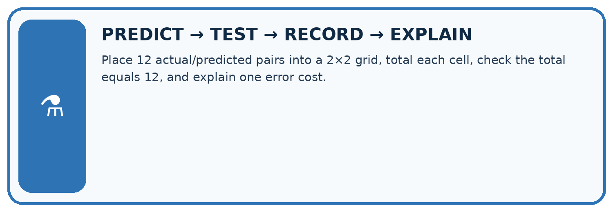
Place 12 actual/predicted pairs into a 2×2 grid, total each cell, check the total equals 12, and explain one error cost.
| Test / input | Prediction | Actual | Evidence / calculation | Change or keep? |
|---|---|---|---|---|
| normal | ||||
| boundary | ||||
| missing | ||||
| fresh transfer |
What did the hardest test teach you that the normal test did not?
Plan → try → check
Before trying: what do I expect, and why? While trying: which step could first go wrong? Afterwards: what did I actually observe, and what should change? Keep “not run” if you only traced the procedure.
Student lesson · 10 of 16
Build your understanding
MASTERY
From Knowing the Word to Owning the Idea
Move upward only when you can produce evidence without copying the worked example.

1 • NAME: Define the concept without repeating the textbook.
2 • TRACE: Show the information, state, branch, calculation, or evidence path.
3 • APPLY: Solve a different example independently.
4 • CHALLENGE: Find a boundary case, counterexample, or unfair outcome.
5 • EXPLAIN LIMITS: Say when the result should not be trusted or used alone.
My strongest evidence of independent understanding:
Student lesson · 11 of 16
Connect your project
CUMULATIVE PROJECT
Transparent Book Recommender
Every week adds one inspectable piece. The system must show how it reached a result.
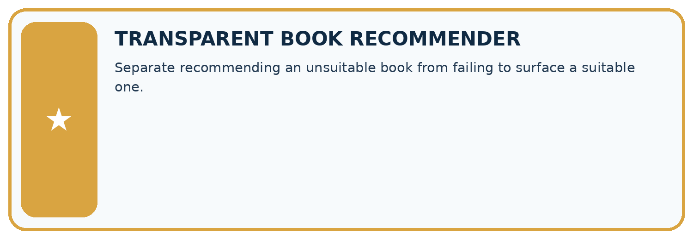
THIS WEEK’S CHECKPOINT Separate recommending an unsuitable book from failing to surface a suitable one.
SYSTEM MAP Reader need → allowed inputs → transparent rule or score → ranked candidates → explanation → test record → human decision
What will you add, change, or verify in the project this week?
What should remain under human control?
RESPONSIBLE DESIGN Collect only necessary information. Show uncertainty and limits. Never confuse a ranking with a fact about a person.
Evidence for your project
Use a confusion table when evaluating recommender category predictions and attach concrete consequences to each error.
Student lesson · 12 of 16
Show what you know
INDEPENDENT MASTERY PROOF
Explain • Transfer • Test • Defend
Complete this page without copying the worked example. Your reasoning matters more than decoration.
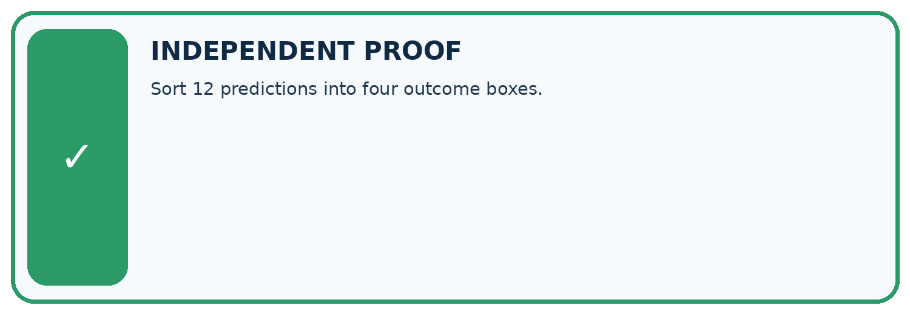
CHALLENGE Sort 12 predictions into four outcome boxes.
1. My fresh example, trace, calculation, or design:
2. My evidence that it works (include a boundary or missing-data case):
3. One limitation, fairness concern, or situation needing human review:
SELF-CHECK □ I explained the mechanism □ I used evidence □ I tested a fresh case □ I named a limitation □ I can answer ‘why?’
Student lesson · 13 of 16
Study a complete case
Week 13 Worked case
Use the supplied details to practise the weekly concept before attempting the independent question. This case extends the illustrated lesson.
The situation
Positive means should recommend. Actual/predicted pairs are yes/yes, no/yes, yes/no, no/no.
The question
Name the four outcomes.
Worked explanation
True positive, false positive, false negative, true negative. Define positive before naming errors.
Explain it in your own words
Which detail supports the answer, and why does it matter?
Trace the supplied case visually
Name outcomes using actual and predicted labels
| Evidence or stage | Value or result |
|---|---|
| True positive | 1 |
| False negative | 1 |
| False positive | 1 |
| True negative | 1 |
Positive means should recommend. Actual/predicted pairs are yes/yes, no/yes, yes/no, no/no.
Name the four outcomes.
True positive, false positive, false negative, true negative. Define positive before naming errors.
Student lesson · 14 of 16
Try a new case independently
Independent case: Count a fresh evaluation independently
Each pair below is reference then prediction: R1 clear/clear, R2 clear/blocked, R3 clear/blocked, R4 blocked/blocked, R5 blocked/clear, R6 blocked/blocked. Use clear then blocked on both axes and reference rows. Build the matrix, give row and column totals, name TP,TN,FP,FN with blocked positive, and calculate accuracy.
Attempt this case before feedback. Record any help. Earlier examples below are further practice; a case already practised with feedback cannot establish fresh transfer.
Week 13 Independent application
Close the worked explanation. Apply the idea to this different question without copying.
Positive means sports. A sports book predicted other and a non-sports book predicted sports occur. Name each error and its consequence for the sports shelf.
My answer, with a trace, calculation or supporting evidence
Create and test
Change one relevant detail. Predict the result before testing. Include a boundary or missing-information case when it helps reveal a limit.
My changed input and expected result
Connect to your project
Separate recommending an unsuitable book from failing to surface a suitable one.
The evidence I will keep
Your teacher has the independent answer and scoring criteria. Complete the matching workbook week to keep your practice evidence together.
Transfer practice from the original programme
Positive means 'should recommend'. A book that should be recommended is rejected; a book that should not be recommended is accepted. Name both errors and explain who experiences each consequence.
Use feedback to improve
Attempt the independent case before hints. Record whether you worked alone, used a hint or followed a model. After feedback, fix the first unsupported step and explain why it changed. A later check uses a changed case, not a copied answer.
Student lesson · 15 of 16
Your lesson route
Start with this question: A fictional book-condition checker predicts repair or sound.
| By the end, I can | How I will show it |
|---|---|
| Build a labelled confusion matrix from matched reference and prediction pairs | Explain the deciding step, show a trace or test, and state one limit. |
| Distinguish false positives from false negatives using a declared positive class | Explain the deciding step, show a trace or test, and state one limit. |
| Check matrix totals and explain why equal accuracy can hide different errors | Explain the deciding step, show a trace or test, and state one limit. |
Remember → watch and explain → try with help → investigate → try independently → keep project evidence. Your teacher may spread this lesson across several classes.
Keep your first prediction. Compare it with what the evidence shows and explain any change.
Student lesson · 16 of 16
Finish and return
Close your notes. Explain this goal in your own words: Build a labelled confusion matrix from matched reference and prediction pairs
If you are unsure, return to the worked picture and explain one arrow. If you are ready, change an input or assumption and justify your prediction.
Save your workbook evidence. At the next review, try a different case before opening your old answer.